Computer vision, deep learning, and the perception systems that meet the physical world.
Inventor and researcher building the sensing and perception layers that let AI understand and act in real environments — from structural crack detection and assistive technology to real-time visual surveillance. Named inventor on a published Indian utility patent and a granted design registration, with IEEE-presented and peer-reviewed publications.
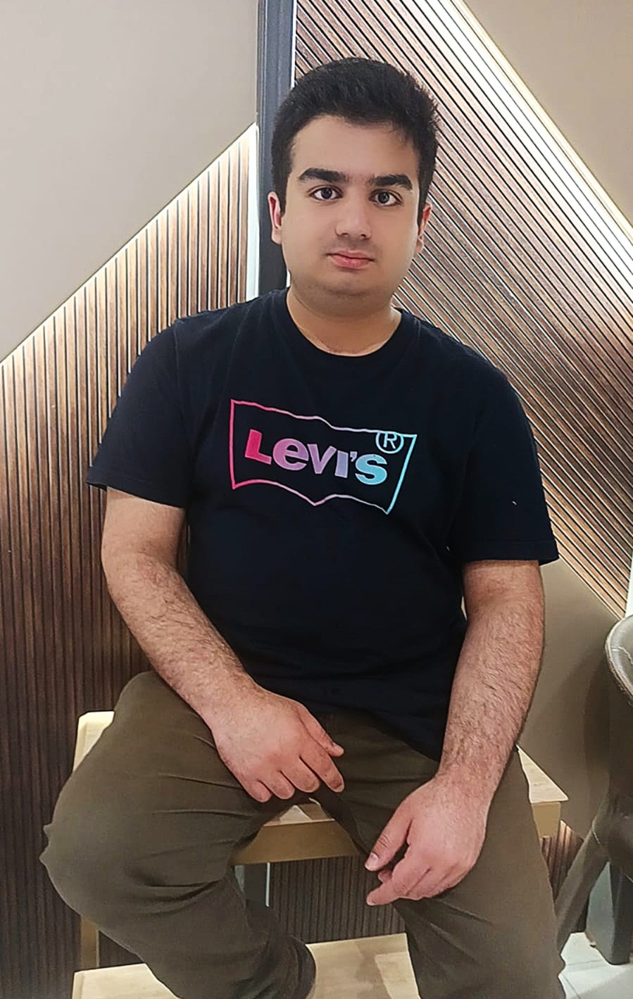
About
Context on where this work comes from.
I'm an undergraduate in Computer Science Engineering and Artificial Intelligence at VIT Bhopal University, currently entering my third year. My research centers on applying computer vision and deep learning to problems with tangible real-world stakes: detecting structural cracks before they become safety hazards, making Braille literacy accessible through ordinary smartphones, and building the perception pipelines that let a surveillance system understand what it's watching in real time.
Alongside coursework, I've co-invented a patented structural crack detection system built on multimodal sensor fusion and AI — the same class of problem robotic and autonomous systems face when they have to sense and interpret an unpredictable physical environment. I hold a granted industrial design registration for the physical device, and I'm a recipient of the Raman Research Award at VIT Bhopal for research contribution as a co-author.
Publications
Conference and journal work, most recent first.
Crack Detection and Image Segmentation: A Deep Learning Based Comprehensive Analysis
A comprehensive deep-learning study on automated crack detection and image segmentation, extending the structural monitoring research underlying the patented device below.
A Haptic Braille Learning Application
MyBraille — an Android application that turns a smartphone's touchscreen and vibration motor into an interactive Braille tactile simulator, evaluated with visually impaired participants for recognition accuracy and usability.
AI-Generated Educational Content Generation
Work examining the use of AI systems to generate educational content, accepted for the JANGJEON Mathematical Society proceedings.
Patents & Design Registration
Intellectual property arising from the structural crack monitoring research.
System and Method of Structural Crack Detection
A structural crack detection system combining multimodal sensor fusion with AI-based analysis, filed with the Indian Patent Office.
An open-source Android app implementing this crack-detection approach is available — see Current Work.
Structural Crack Monitoring Device
Granted industrial design registration (Class 10-05) for the physical form of the crack-monitoring device.
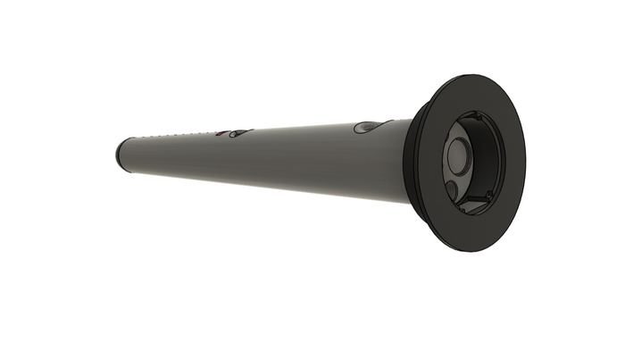
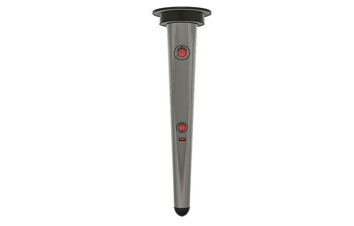
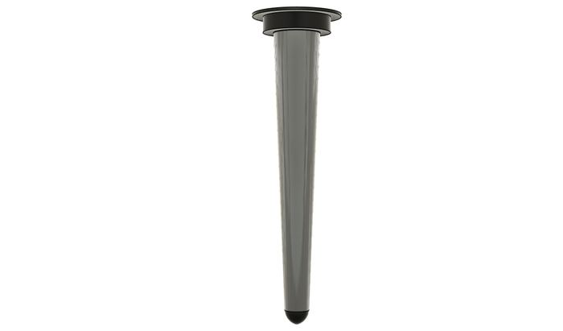
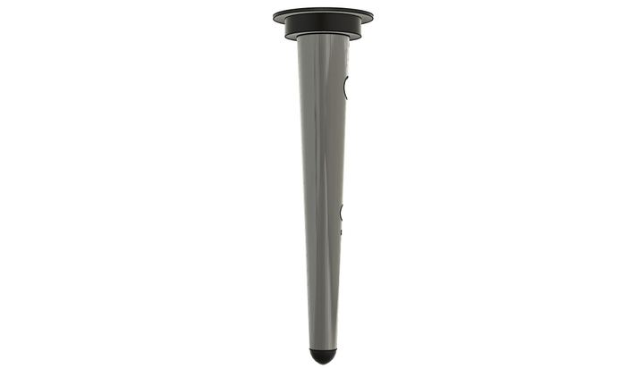
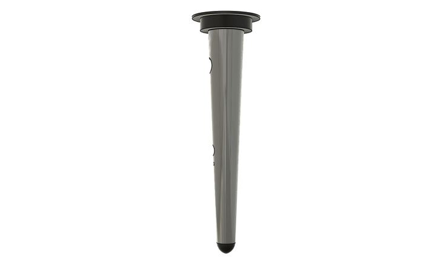
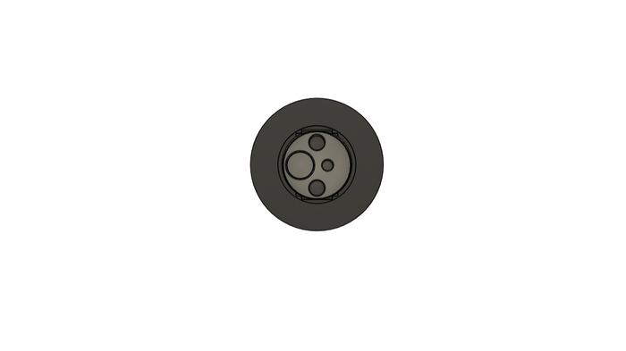
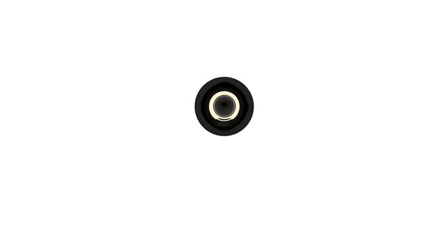
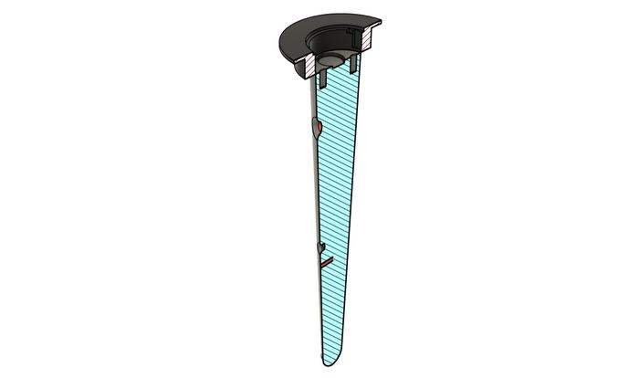
Only the officially granted design representation views are shown here — no filing forms, search reports, or internal specification documents.
Physical Build
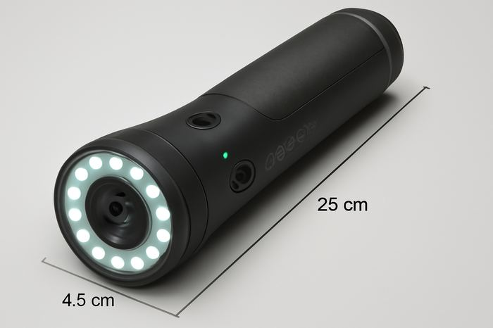
Awards & Recognition
Raman Research Award — Co-author
VIT Bhopal University
Utility patent published + design registration granted
Indian Patent Office / Controller General of Patents, Designs & Trade Marks
Paper presented at IEEE SENNET-2025
4th IEEE International Conference on Sensors and Related Networks
Current Work
Live applications built on top of the research above.
Smart Storage-Aware CCTV Surveillance System
A camera that records continuously spends almost all of its storage on nothing happening. This system watches the scene instead: it decides, frame by frame, whether anything actually moved, and commits video to disk only while something did — turning a continuous feed into a short, browsable list of events, each with its own clip and thumbnail. The live application (FastAPI + OpenCV, streamed to the browser over WebSockets) is paired with a research-oriented evaluation pipeline benchmarked on standard background-subtraction sequences, moving the work from simple motion-triggered recording toward a published, learned approach to storage-aware event detection.
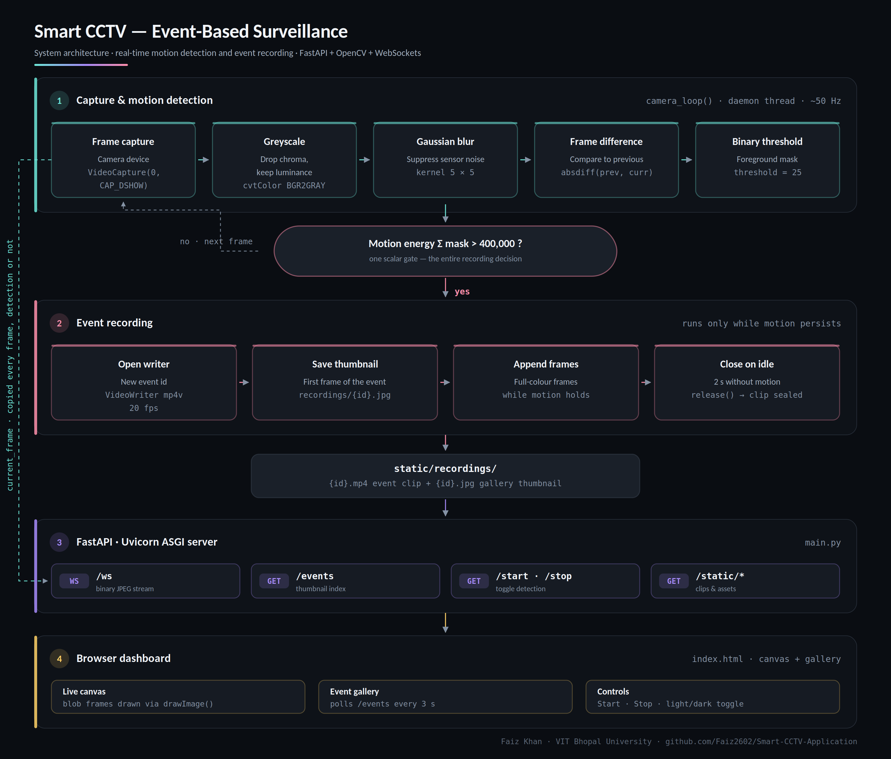
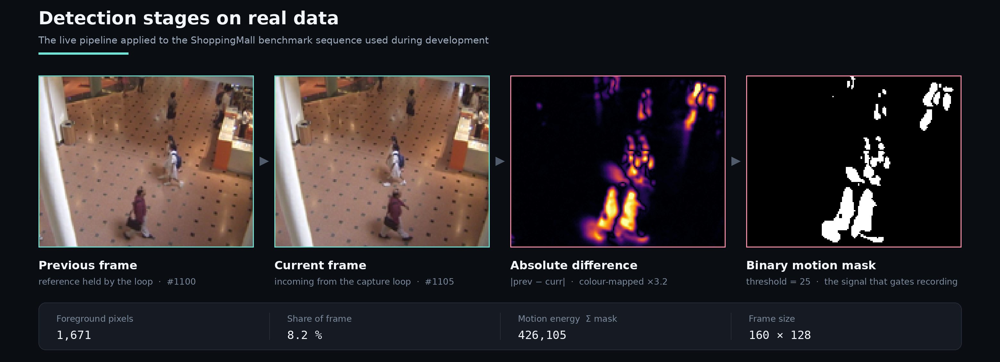
| Parameter | Value | Why it is set there |
|---|---|---|
| Blur kernel | 5 × 5 Gaussian | Removes sensor noise that would otherwise read as movement in a still scene |
| Difference threshold | 25 | Minimum per-pixel intensity change counted as motion |
| Motion energy gate | 400,000 | Total mask sum required to open a recording — the storage decision in one number |
| Post-motion hold | 2 s | Keeps one real-world event in one clip instead of fragmenting it into dozens |
| Clip format | MP4 (mp4v) @ 20 fps | Plays directly in the browser gallery with no transcoding step |
| Stream transport | Binary WebSocket | Replaced MJPEG polling; no flicker, no reconnect stalls, no black frames |
- Flask MJPEG stream rendered as a black, flickering frame in the browserRebuilt the server on FastAPI and pushed binary JPEG frames over a WebSocket
- Windows MSMF capture backend could not grab framesForced the DirectShow backend at capture time
- Refresh-based image streaming flickered on every updateDecoded frames into object URLs and drew them onto a canvas
- Event recordings were written as zero-second filesCorrected the writer's frame rate, frame size and release ordering
- Gallery thumbnails failed to loadMounted the static directory explicitly on the FastAPI app
- MOG2 background subtraction proved unstable on the live feedSwitched the real-time path to frame differencing; MOG2 retained offline, where its adaptivity pays off
- Reorganized the entire codebase into a research-oriented pipeline
- Integrated CDnet2014 benchmark sequences — highway, overpass, and busStation
- Implemented the full baseline: MOG2 background subtraction, morphological filtering, connected-component analysis, and event-level storage
- System now saves only meaningful foreground events — predicted masks, event-wise recordings, storage statistics, and summary reports
- Built a complete evaluation pipeline: automatic ground-truth event generation, event-level comparison, mask-level evaluation
- Ran parameter tuning across 36 experiments plus ablation studies on all three benchmark sequences
- Identified best parameters; generated consolidated result tables and publication-quality graphs
- Drafted the paper skeleton — methodology and experimental framework
The repository carries the live application and a 20-frame sample of every benchmark sequence used during development — Campus (outdoor foliage), ShoppingMall (indoor crowd), and a hand-labelled ground-truth set.
Building Health Assessment — On-Device Crack Detection
A mobile reference implementation of the structural crack-detection approach behind the published patent (see Patents & Design Registration) — an Android app that runs a PyTorch Mobile crack-detection model fully on-device, then combines the result with a building's age and material to produce a health score, risk rating, predicted remaining lifespan, and maintenance recommendations.
- On-device inference with a MobileNetV3 + CBAM-attention crack-detection model — no image ever leaves the phone
- Camera capture flow feeding directly into the model via PyTorch Mobile's Android runtime
- Health-scoring engine: crack confidence + building age + material type → health score, risk level, and predicted remaining lifespan
- Auto-generated, prioritized maintenance recommendations
- Verified the bundled model directly with PyTorch (
torch.jit.load) across a range of input sizes to confirm correct, robust inference - Extended multi-image assessment engine scaffolded (per-section scoring, deterioration-rate correlation) ready to wire into the main flow
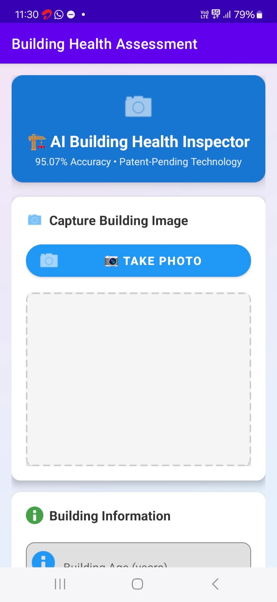
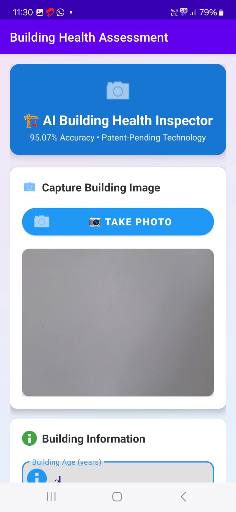
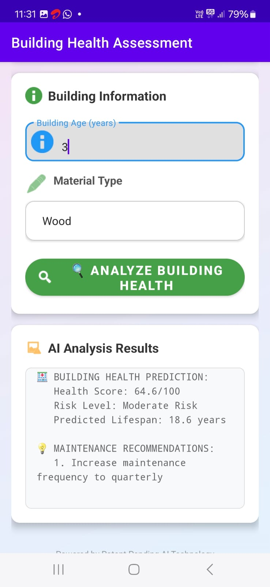
MyBraille Application — Haptic Braille Learning
An Android application that turns a smartphone's touchscreen and vibration motor into an interactive Braille tactile simulator, letting a user feel a live-rendered Braille dot pattern under their finger for any letter (A–Z) or digit (0–9). Built with teammates and evaluated with visually impaired participants for recognition accuracy and usability — the basis for the IEEE SENNET-2025 paper “A Haptic Braille Learning Application” (see Publications above).
- Real-time haptic rendering of Braille dot patterns via touchscreen + vibration motor, felt directly under the finger
- Full A–Z and 0–9 character set, swipe to move between characters
- Audio cues on every character change for eyes-free, screen-reader-style navigation
- Simple, high-contrast interface designed around accessibility rather than sighted use
- Evaluated with visually impaired participants; results published and presented at IEEE SENNET-2025
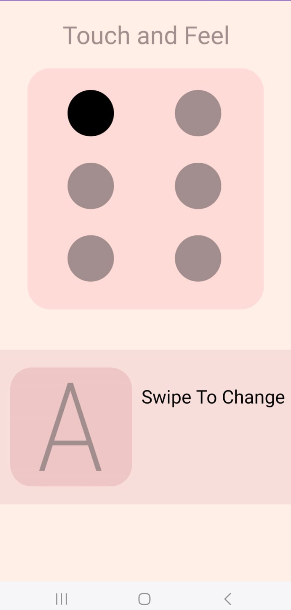
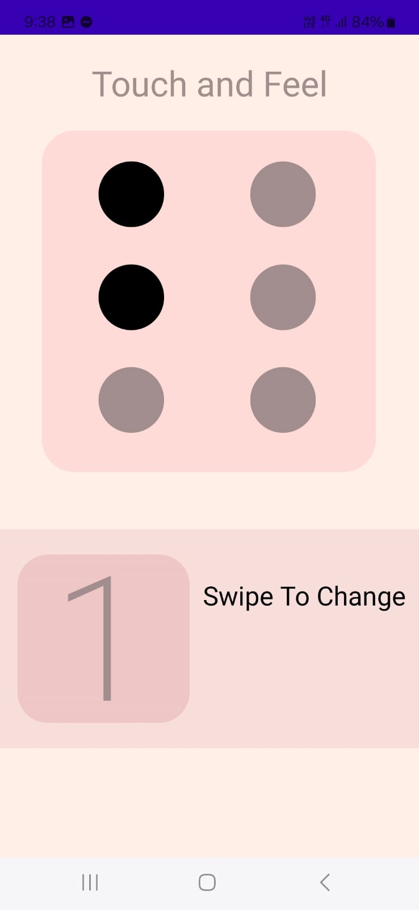
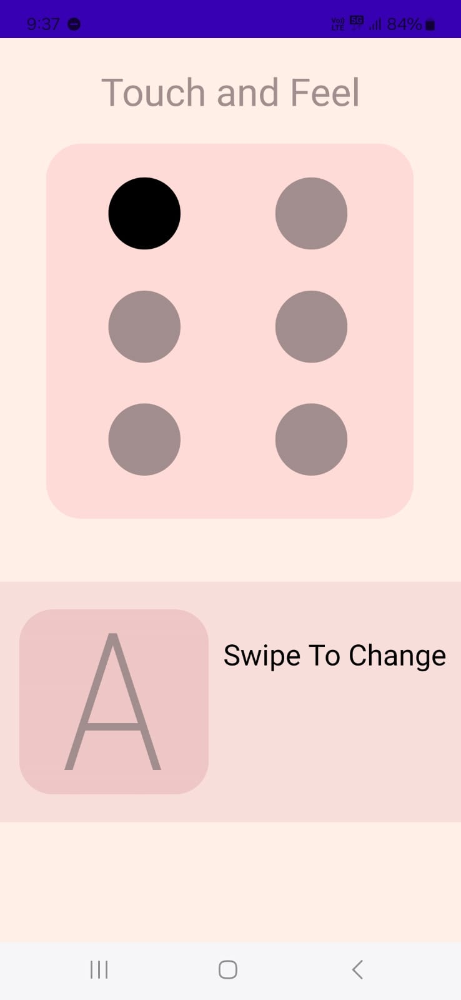
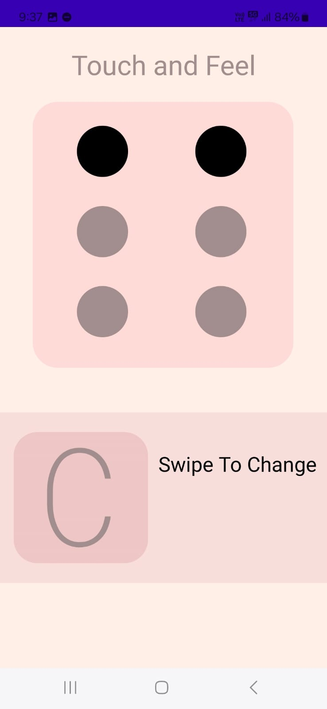
Other Projects
Smaller builds and coursework — practical exercises alongside the research above.
Medication Reminder
A desktop app (Python + Tkinter) that lets you log medications with a name, dosage, and reminder time, then pops up an on-screen alert when it's time to take each one — a background thread checks the clock every 60 seconds.
PDF Research Paper Scanner
A Tkinter desktop tool that extracts structured metadata from research-paper PDFs — title, authors and co-authors, section headings, and the full reference list — to make organizing and reviewing papers faster.
Open Source Software Audit
A structured audit of Python as an open-source project — its license, governance, and ecosystem — paired with five original Bash scripts covering system inspection, package auditing, disk/permission auditing, log analysis, and an interactive open-source manifesto generator.
Profiles & Contact
Reach out, or find the canonical record of this work elsewhere on the web.